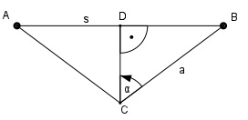

Aufgabe 214 Früher stellten die Luftschiffe ihre Höhe h mit der Hilfe eines Echolotes fest. Wie hoch ist ein solches Fluggerät, wenn der Schall im Heck ausgesandt und 190 m entfernt im Bug aufgefangen wird und es mit einer Geschwindigkeit von 125 km/h fliegt, die Schallgeschwindigkeit 333 m/s beträgt und das Signal vom Aussenden bis zum Empfang 6 s braucht? Unter welchem Winkel α treffen die Schallwellen auf der Erde auf?

A Sendestation im Heck zu Beginn der Messung B Position der Empfangsstation im Bug nach 6 s Der Schall legt in 6 s den Weg s = 333 m/s * 6 s = 1 998 m zurück. Somit ist die Strecke a, der Rückweg des Schalls, 1 998/2 m = 999 m lang. vLuftschiff = 125 km/h = 125/3,6 m/s = 34,72 m/s Das Luftschiff hat sich in 6 s: sLuftschiff = vLuftschiff * 6 s = = 34,72 m/s * 6 s = 208,3 m weiterbewegt. s = sLuftschiff + 190 m = = 208,3 m + 190 m = 398,3 m Im Dreieck CBD: s/2 398,3/2 m sin α = ------ = ------------ = 0,1993 a 999 m --> α = 11,5 ° CD cos α = ------ |*a a CD = cos α * a = = tan 11,5° * 999 m = 0,9799 * 999 m = = 978,9 m = Flughöhe